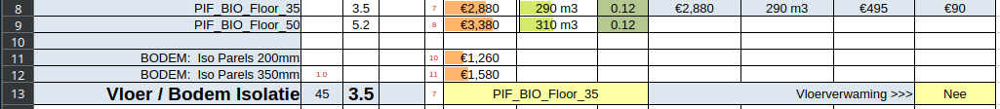
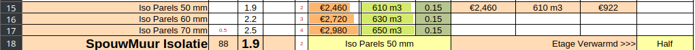

Je kunt hier dus kiezen voor Onder / Boven / Onder + Boven.
Er wordt hier altijd een vergelijking gemaakt met de situatie die op het basisblad is ingevuld (de bestaande situatie dus)

Allereerst een paar bijzondere instellingen op het tabblad
Een keuze. Het is goed om te bekijken hoe groot het verschil is tussen wel en geen vloerverwarming eb bij de geringste twijfel of er in de toekomst mogelijk vloerverwarming gaat komen, deze instelling te kiezen voor vloerverwaming = ja

In de oude situatie wordt niet van het basisblad uitgegaan, maar wordt uitgegaan van een onverwarmde bovenverdieping.
Misschien is dit fout en moeten we gewoon uitgaan van keuze op het basisblad.
In de situatie na isolatie kun je voor de verwarming op de etage kiezen uit Nee / Half / Ja.
Het meest realistische is om de verdieping half of helemaal te verwarmen. Immers als we het gehele huis toekomstig bestendig gaan maken, gaan we uiteindelijk een theemuts rond het huis plaatsen en een goede ventilatie aanbrengen, zodat de ramen op de bovenverdieping zomers ook gesloten zullen moeten worden.

Omdat glas vaak een behoorlijke investering is en omdat er nu vaak op de etage niet gestookt wordt is het vaak zinvol om het vervangen van het glas eerst in de verwarmde ruimten (beneden dus) te doen, en in een later stadium pas boven. De ISDE subsidie mag daarom ook in twee keer worden aangevraagd.
Je kunt hier dus kiezen voor Onder / Boven / Onder + Boven.
Er wordt hier altijd een vergelijking gemaakt met de situatie die op het basisblad is ingevuld (de bestaande situatie dus)
Deze rubriek moet nog veel verder gevuld worden met oplossingen.
Omdat hier zulke grote verschillen in oplossingen en prijzen bestaan, staat deze als P.M. post meegenomen. Hierdoor wordt niet de prijs en subsidie van de warmtepomp meegenomen, maar wel de verdubbeling van de ISDE subsidie op de overige maatregelen.
Het totaal overzicht laat alle kosten zien, met en zonder subsidie.
ISDE Subsidie is daar waar nodig verdubbeld.
De gemeentelijke NIP subsidie wordt geactiveerd als er in cel D57 iets staat.
De gasprijs kan worden ingevuld in cel D59 en wordt gebruikt voor het berekenen van de TerugVerdienTijd